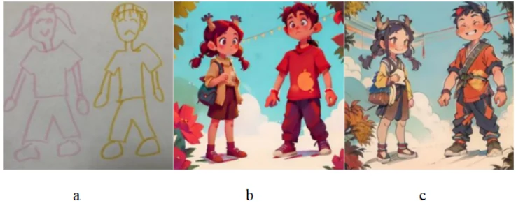

01 · Healthy Ageing
LumaStep
Gaze-mediated VR training for environmental hazard search and gaze stabilization in older adults.
Open projectEach project combines system design with empirical evaluation. The focus is not only what the interface looks like, but how its interaction rules shape attention, behavior, and experience.
The three core case studies move from gaze-mediated rehabilitation, to attentional support in mindfulness, to embodied interaction with AI.
Gaze-mediated VR training for environmental hazard search and gaze stabilization in older adults.
Open project
Eye-controlled attentional support in immersive mindfulness, with a related study on restorative virtual blue–green spaces.
Open project
A repeated drawing–movement–generation loop exploring AI as part of an embodied therapeutic process.
Open project